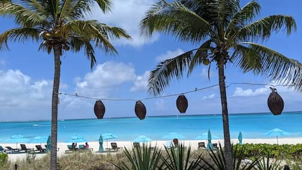
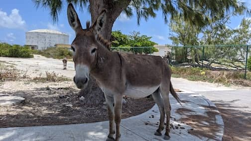
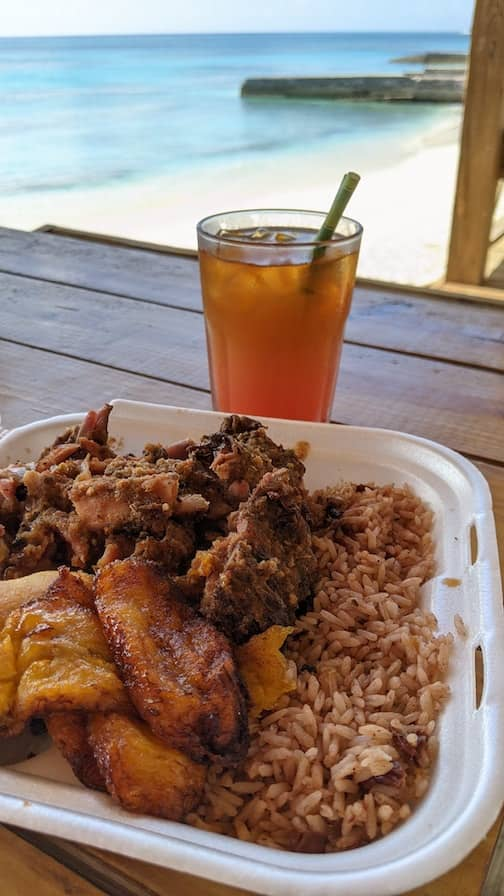
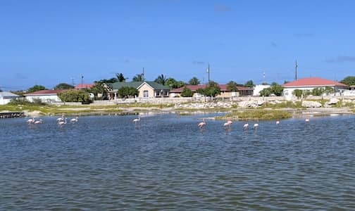
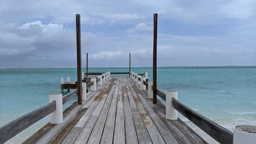

..
Turks and Caicos
May 10 - 21. We stayed at Sibonne Beach Hotel in Turks and Caicos. Took a short plane ride to Grand Turk Island and stayed there for 6 nights. There were many wild donkeys roaming everywhere on Grand Turk. Flamingos were a common sight in town. We also took a ferry to visit Middle and North Caicos.
Very blue seas. Though honestly, the weather was a bit too hot for me.
 The beach at Sibonne Beach Hotel
 One of the many wild donkeys we saw in Grand Turk Island
 Yummy jerk plate from Jucky Jerks food truck with a very strong cocktail at Sandbar
 We often saw flamingos during the evening in Grand Turk Island
 Horse Stable Beach in North Caicos. We had the place mostly to ourselves